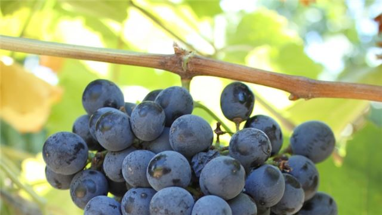
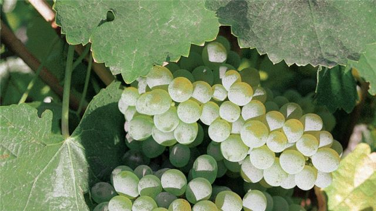

Viveiros Plansel · Montemor-o-Novo · Alentejo
Vines for a successful vineyard.
Grafted vines from the finest Portuguese grape varieties. Certified and grown in our own nursery in the Alentejo.
Viveiros Plansel is part of the Plansel Group: wines, events and knowledge

- 1975First vineyards in Montemor-o-Novo
- ~50 %of Portugal's certified vines come from Plansel clones*
- 50+years of clonal selection of Portuguese varieties
- 12grape varieties in the programme, plus rootstocks and table grapes
- 100 %certified planting material
* Company figure from Plansel, quoted by Vinetur, 9 Nov 2026
 Viveiros01
Viveiros01
What we offer
From vine to olive tree.
Get to know Viveiros Plansel and everything we offer to grape and olive growers.
 01NurseryGrafted vines, grown from the finest Portuguese grape varieties.
01NurseryGrafted vines, grown from the finest Portuguese grape varieties. 02Varieties & rootstocksThe story of the varieties and rootstocks we propagate.
02Varieties & rootstocksThe story of the varieties and rootstocks we propagate. 03Olive treesOur olive varieties and their technical and scientific development.
03Olive treesOur olive varieties and their technical and scientific development. 04Services & productsServices and products for vineyard and olive grove, on request.
04Services & productsServices and products for vineyard and olive grove, on request.
 How it all began02
How it all began02
How it all began
A nursery that changed Portugal.
After buying Quinta de S. Jorge in Montemor-o-Novo, Jorge Böhm, German by birth with a deep love of Portugal, founded the company Plansel.
It grew with the nursery, above all with grafted vines, which until then were practically unknown in Portugal. Later it added the propagation of olive trees from semi-hardwood cuttings.

 Production03
Production03
The journey of a vine
From cane to planting vine in eight steps.
From pruning to dispatch, all material stays labelled by variety, clone and certification category.
- 01Cutting rootstocks
Rootstocks are cut in the field, sorted by calibre, de-budded by machine, tied in bundles of 200 canes and disinfected.
- 02Harvesting scions
Wood from the scion varieties is cut in the field, bundled, labelled and separated by clone and certification category.
- 03Cold storage
In a cold room with controlled humidity and temperature.
- 04Grafting
Skilled staff graft at the bench; the machine makes the omega cut.
- 05Stratification
In peat-filled boxes, rootstock and scion knit together in a warm, humid chamber.
- 06Nursery field
The vines grow in the field until autumn or winter. Plansel and the official services check variety and health.
- 07Grading and waxing
Every vine is checked against the legal standards, its roots are trimmed, and it is waxed, counted and stored in a climate-controlled room.
- 08Dispatch and planting
In cardboard boxes lined with plastic against drying out. Before planting the roots are trimmed; planting is by hand or by machine.
Certification
All planting material is certified.
We sell in the “certified” category, recognisable by the blue label. Material from our mother-plant fields goes to our own nursery, to growers and to other nurseries.
 Grape varieties04
Grape varieties04
Viticultura
The varieties we propagate.
Portuguese grape varieties from Plansel's clonal selection.
- Touriga NacionalRed variety

Touriga FrancaRed variety TrincadeiraRed variety
TrincadeiraRed variety AragonezRed variety
AragonezRed variety Tinta BarrocaRed variety
Tinta BarrocaRed variety CastelãoRed variety
CastelãoRed variety ArintoWhite variety
ArintoWhite variety Antão VazWhite variety
Antão VazWhite variety LoureiroWhite variety
LoureiroWhite variety
GouveioWhite variety ViosinhoWhite variety
ViosinhoWhite variety- Photo to followAlvarinhoWhite variety
Table grapes, rootstocks, clones and quantities are available on request.
 Olivicultura05
Olivicultura05
Olivicultura
Olive trees come from our nursery too.
We propagate olive varieties from semi-hardwood cuttings and follow their technical and scientific development.
 Contact06
Contact06
Order vines
Any questions? Write to us.
Tell us the varieties, clones, rootstocks and quantities. We reply with availability and a quote.
- Address
- Viveiros Plansel, Quinta de São Jorge
Estrada Municipal 537, Porto das Lãs
7050-203 Montemor-o-Novo, Portugal - viveiros@plansel.com
- Phone
- +351 266 899 260
Call to a Portuguese landline - Follow
- Instagram · Facebook